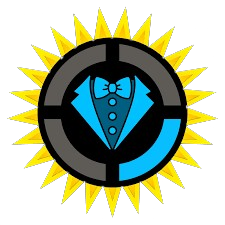
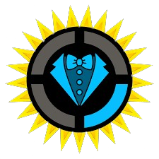
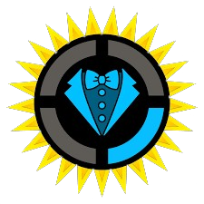
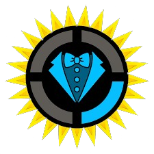

Welcome to the Autobiography of Matthew Robert Patrick
Matthew Robert Patrick, commonly known as MatPat, is a prominent internet personality, content creator, and entrepreneur. Born on November 15, 1986, in Ohio, USA, MatPat rose to fame through his YouTube channels, most notably "The Game Theorists", "The Film Theorists", "The Food Theorists", and "The Style Theorists" where he applies analytical and scientific methods to dissect video games, movies, food, fashion and popular culture phenomena.
MatPat graduated from Duke University with a degree in Neuroscience, which he often incorporates into his analytical approach to media. His channels have gained millions of subscribers and billions of views, making him one of the most influential figures in the online gaming and entertainment community.
In addition to his YouTube success, MatPat co-founded "Theorist Inc.," a digital media company that produces various channels and content under his brand. He has collaborated with other YouTubers, gaming companies, and media outlets, expanding his reach and influence across different platforms.
Beyond his online presence, MatPat has engaged in philanthropic efforts, including charity livestreams and collaborations with organizations like St. Jude Children's Research Hospital.
Overall, MatPat's blend of entertainment, education, and analytical thinking has earned him a dedicated fanbase and established him as a leading figure in online content creation.
He first moved to New York to fulfill his dream of being an actor by performing in theater productions, spending two years unemployed.
Launched The Game Theorists
In 2011. he turned his channel into a portfolio to showcase his ability to write, research and edit videos online for potential employers. On April 18, 2011, he uploaded his first episode of Game Theory where he discussed the quantum mechanics of the 1995 video game Chrono Trigger.
Launched The Film Theorists
In 2014. He launched the channel Film Theory as a spin-off to the first channel, which delves into the hidden meanings, secret messages, and interesting details behind movies and television shows by applying scientific, mathematical, and historical knowledge to analyze popular films and series.
Launched GTLive (A Let's Play Series)
On August 26, 2015. he started a Let's Play series called GTLive, where he posts gameplay and video reactions with his wife, Stephanie.
MatPat Meeting the Pope??
On May 2016. MatPat was invited as a representative of the digital community along with other popular YouTubers to an event which was part of a larger initiative called "Scholas Occurrentes," an educational organization launched by Pope Francis aimed at bringing together young people from around the world to share ideas and projects. They discussed how the internet and social media can be used for social good. Matpat gifted the Pope a copy of the game "Undertale".
Launched Game Lab on Youtube Premium
On June 8, 2016. He posted a new show on his channel called Matpat's Game Lab on YouTube Premium. The show takes video game concepts and tests them in real life through experiments, training sessions, and expert consultations.
He played roles on other series of other creators as well such as:
Scare PewDiePie by PewDiePie
"Scare PewDiePie" is a reality-adventure web television series starring Felix Kjellberg, better known by his online alias PewDiePie, who is one of the most popular and influential YouTube personalities.
Escape the Night: 3rd Season by Joey Graceffa
"Escape the Night" is a reality television series created by Joey Graceffa, who is also the host and a participant in the show. In the series, Joey Graceffa invites a number of other popular YouTubers to attend a themed party at a mansion set in a different historical era each season.
A Heist with Markiplier by Markiplier
"A Heist with Markiplier" is designed as a choose-your-own-adventure experience, where viewers make choices at the end of each video that lead them down different paths, resulting in 31 possible endings.
In Space with Markiplier by Markiplier
"In Space with Markiplier" is a follow up to "A Heist with Markiplier" having the same mechanics of the previous series.
Continuing where we left off
Charity Livestreams for St. Jude Children's Research Hospital
In 2019, The Game theorists team have started a series of livestreams for St. Jude Children's Research Hospital. In 2019, viewers donated $1.3 million, and in 2020, the Game Theorists raised more than $3 million.
Launched The Food Theorists
In July 2020. the channel Food Theory began releasing videos which blend food science with psychology, physiology and conspiracy.
Launched The Style Theorists
On February 18, 2023. the channel Style Theory was launched. Much like the other channels, it focuses on the math, science, history, psychology and mystery of fashion.
Hosted the 2023 Streamy Awards
On August 27, 2023. Matpat was chosen to host the Streamy Awards.
MatPat Finally achieving his Dream
On October 27, 2023. The highly anticipated movie "Five Nights At Freddy's" released and was revealed MatPat had a cameo in the movie. During the scene, MatPat has only a few things to say, including pushing the group to order lunch as it's the most important meal of the deal. MatPat's part in the scene ends with the delivery of his famous line "that's just a theory."
Announcing His Retirement
On January 9, 2024. He announced in his video "Goodbye Internet" that he would uploading his last ten theories and by March 9 he would be stepping down from hosting the channels. Leaving each of his channels to an appointed person to become the new host.
Releasing his Final Episodes as Host
On March 9, 2024. He officially retired on all of his channels (except GTLive) and uploaded one last theory on all four channels.
Is this the last we have seen of him?
As of now, MatPat has been continuing uploading videos on his Let's Play Channel "GTLive" and announced that it is not the last we have seen of him as he will appear in different other projects.